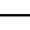
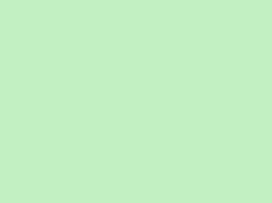
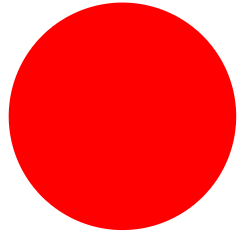
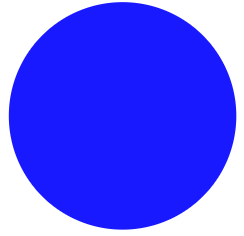

Legenda:
The Legend:
Vodivosť:
Conductivity:
-
 - napätie
- napätie
- - voltage
 -
uzemnenie
-
uzemnenie
- -
ground
-  - bez vodivosti
- - nonconducting state
- - nedefinovný stav
- - undefined state
Stav tranzistora:
State of transistor:
-  - zapnutý
- - switch on
- - vypnutý
- - switch off
Častice
Elements
-  - kladne nabitá častica
- - positive charged element
-  - záporne nabitá častica
- - negative charged element
Štruktúra:
Structure:
 - vysoko dopovaný
- vysoko dopovaný
- polovovodič p typu
- - highly doped
- semiconductor p type
- - oblasť polovovodiča
- p typu
- - semiconductor area
- p type
- - vysoko dopovaný
- polovovodič n typu
- - highly doped
- semiconductor n type
- - oblasť polovovodiča
- n typu
- - semiconductor area
- n type
 - oblasť priestorového
- oblasť priestorového
- náboja OPN
- - space charge
- area
Elektródy NMOS:
Electrodes NMOS:
- SN - Source
- DN - Drain
- GN - Gate
- Bn - Bulk
Elektródy PMOS:
Electrodes PMOS:
- SP - Source
- DP - Drain
- GP - Gate
- BP - Bulk